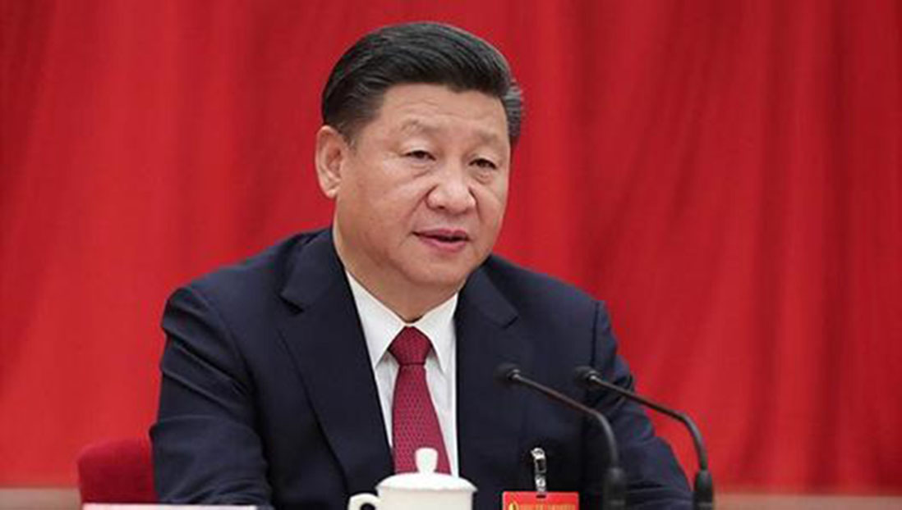

习主席在人民大会堂发表十九大报告
2017年11月10日 十九大 转自新华网

我们党是高举马克思主义伟大旗帜、理论上十分成熟并且不断发展的伟大政党。党的全国代表大会作为党的最高领导机关，在推动党的事业发展和党的理论建设中具有极为重要的作用。改革开放以来，党的历次全国代表大会都在理论建设上作出重要贡献。党的十九大最重大的理论成就，就是把习近平新时代中国特色社会主义思想写在党的旗帜上，确立为党必须长期坚持的指导思想，实现了党的指导思想又一次与时俱进。
把习近平新时代中国特色社会主义思想确立为党必须长期坚持的指导思想，实现了党的指导思想又一次与时俱进
党的十九大是在我国全面建成小康社会决胜阶段、中国特色社会主义进入新时代的关键时期召开的一次十分重要的大会。这次大会分析了国际国内形势发展变化，回顾和总结了过去五年的工作和历史性变革，作出了中国特色社会主义进入了新时代、我国社会主要矛盾已经转化为人民日益增长的美好生活需要和不平衡不充分的发展之间的矛盾等重大政治论断，深刻阐述了新时代中国共产党的历史使命，提出了新时代坚持和发展中国特色社会主义的基本方略，确定了决胜全面建成小康社会、开启全面建设社会主义现代化国家新征程的目标，对新时代推进中国特色社会主义伟大事业和党的建设新的伟大工程作出了全面部署。其中，党的十九大最重大的理论成就，就是把习近平新时代中国特色社会主义思想写在党的旗帜上，确立为党必须长期坚持的指导思想，实现了党的指导思想又一次与时俱进。这一重大理论成就具有重大政治意义、理论意义、实践意义。
党的十八大是习近平新时代中国特色社会主义思想形成的历史起点。党的十八大以来的5年，以习近平同志为核心的党中央不忘初心、砥砺奋进，有效应对国际国内诸多风险和挑战，解决了许多长期想解决而没有解决的难题，办成了许多过去想办而没有办成的大事，取得全方位、开创性的历史性成就，党和国家事业发生深层次、根本性的历史性变革，中国特色社会主义进入新时代。在这个过程中，习近平同志从理论和实践的结合上，以巨大政治勇气和强烈历史担当，围绕回答新时代坚持和发展什么样的中国特色社会主义、怎样坚持和发展中国特色社会主义这个重大时代课题，进行艰辛理论探索，取得重大理论创新成果，创立了习近平新时代中国特色社会主义思想。党的十八大以来，党和国家事业之所以能攻坚克难，全面开创新局面，从根本上说是因为有以习近平同志为核心的党中央的坚强领导，是因为有习近平同志作为党中央核心、全党核心的坚强领导，是因为有习近平新时代中国特色社会主义思想的科学指引。
全面建设社会主义现代化强国，这是党和国家面向未来最重要的任务，也是习近平新时代中国特色社会主义思想形成的时代条件。一部十九大报告，就是习近平新时代中国特色社会主义思想的科学诠释和充分体现，是我们党在新时代极富原创性、经典性、源泉性的强国论、战略论、人民论，具有承前启后、继往开来的划时代的里程碑意义。这部报告进一步指明了党和国家事业的前进方向，是我们党团结带领全国各族人民坚持和发展中国特色社会主义的政治宣言和行动纲领，也是习近平新时代中国特色社会主义思想的集中体现。党的十九大把习近平新时代中国特色社会主义思想写在党的旗帜上，确立为党必须长期坚持的指导思想，实现了党的指导思想又一次与时俱进，为夺取新时代中国特色社会主义伟大胜利、实现“两个一百年”奋斗目标和中华民族伟大复兴的中国梦提供了科学理论指导。
习近平新时代中国特色社会主义思想是一个博大精深的科学理论体系。